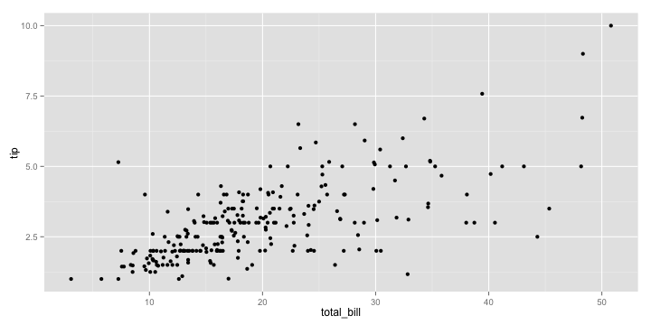
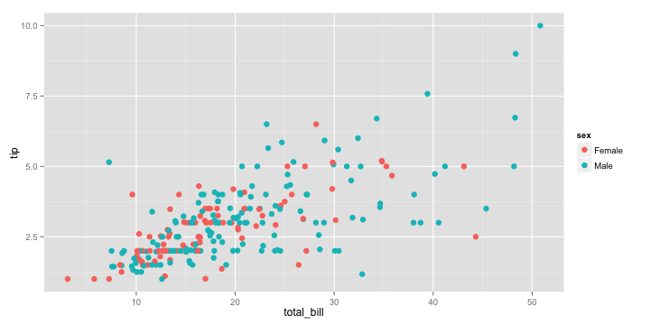
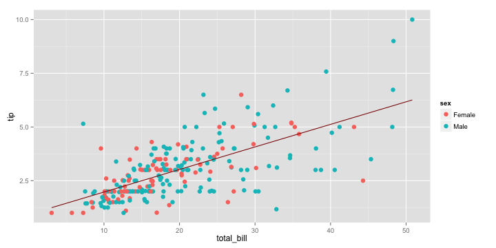
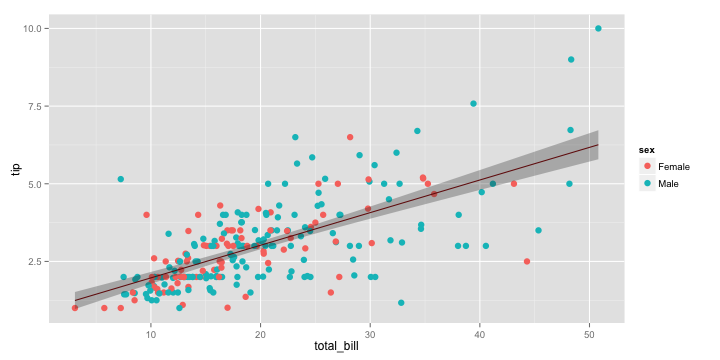
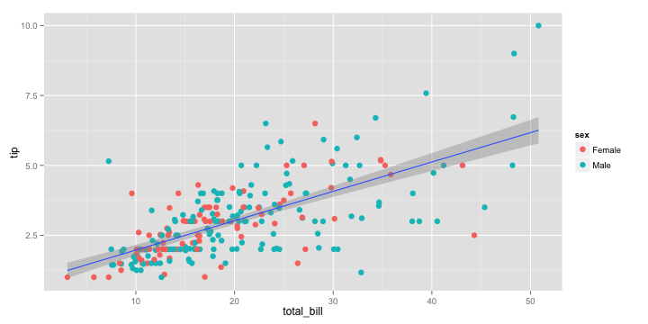
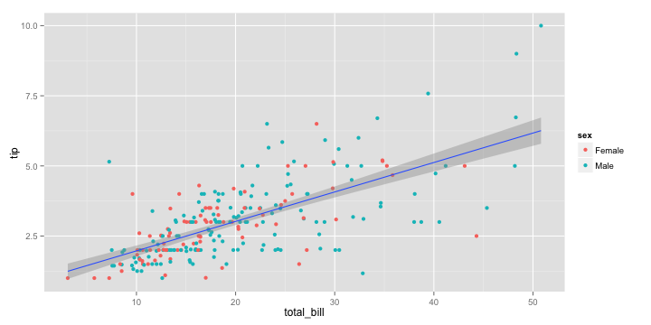
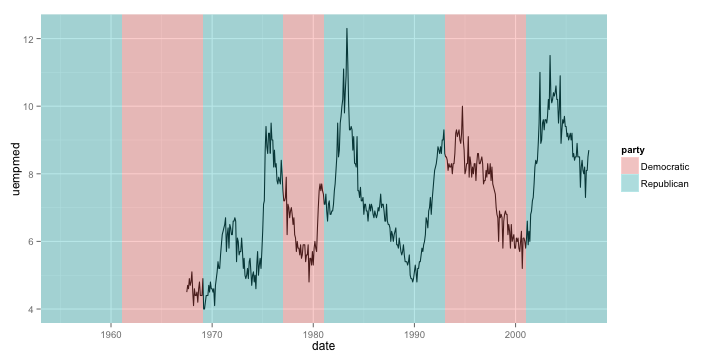
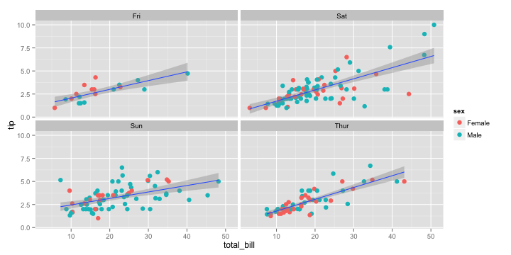
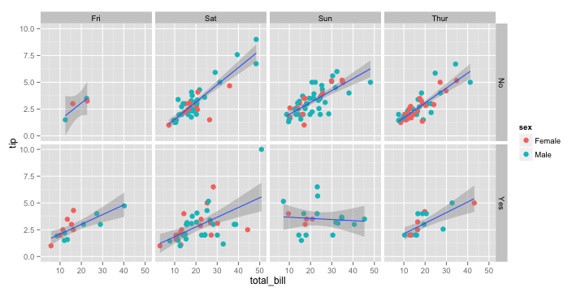

Grammar of Graphics
In this lesson, you will learn about the grammar of graphics, and how its implementation in the ggplot2 package provides you with the flexibility to create a wide variety of sophisticated visualizations with little code.
We have used ggplot2 before when we were analyzing the bnames data. Just to recap, let me create a simple scatterplot plot of tip vs total_bill from the dataset tips found in the reshape2 package
data(tips, package = 'reshape2')
library(ggplot2)
qplot(total_bill, tip, data = tips, geom = "point")

The qplot function pretty much works like a drop-in-replacement for the plot function in base R. But using it just as a replacement is gross injustice to ggplot2 which is capable of doing so much more.
So if there is one advice I could give you about learning ggplot2, it would be to stop reading examples using qplot because it gives you the false impression that you have mastered the grammar, when in fact you have not. qplot provides some nice syntactic sugar, but is not the real deal.
So, what is the grammar of graphics? Rather than describing the theory behind the grammar, let me explain it by deconstructing the plot you see below.

I want to focus your attention on two sets of elements in this plot
Aesthetics
First, let us focus on the variables tip, total_bill and sex. You can see from the plot that we have mapped total_bill to x, tip to y and the color of the point to sex. These graphical properties x, y and sex that encode the data on the plot are referred to as aesthetics. Some other aesthetics to consider are size, shape etc.
Geometries
The second element to focus on are the visual elements you can see in the plot itself. I see three distinct visual elements in this plot.
- point
- line
- ribbon
These actual graphical elements displayed in a plot are referred to as geometries. Some other geometries you might be familiar with are area, bar, text.
Another very useful way of thinking about this plot is in terms of layers. You can think of a layer as consisting of data, a mapping of aesthetics, a geometry to visually display, and sometimes additional parameters to customize the display.
There are three layers in this plot. A point layer, a line layer and a ribbon layer. Let us start by defining the first layer, point_layer. ggplot2 allows you to translate the layer exactly as you see it in terms of the constituent elements. The syntax being used might seem very verbose when compared to qplot, but I recommend some patience, since the rewards you reap by understanding the grammar are worth the trouble.
layer_point <- geom_point(
mapping = aes(x = total_bill, y = tip, color = sex),
data = tips,
size = 3
)
ggplot() + layer_point

That was easy! Wasn't it? Let us move on to the second layer. It is a regression line fitted through the points. We know that the x is still mapped to total_bill, but we have to map the y to a fitted value of tip rather than tip. How do we get the fitted value?
Well, we can use lm followed by predict to compute not only the fitted values, but also a confidence interval around the fitted values which will come in handy later. Note that we combine the total_bill column with the predicted estimates so that we can keep the x and y values in sync.
model <- lm(tip ~ total_bill, data = tips)
fitted_tips <- data.frame(
total_bill = tips$total_bill,
predict(model, interval = "confidence")
)
head(fitted_tips)
## total_bill fit lwr upr
## 1 16.99 2.704636 2.569519 2.839753
## 2 10.34 2.006223 1.818101 2.194345
## 3 21.01 3.126835 2.996732 3.256937
## 4 23.68 3.407250 3.266528 3.547972
## 5 24.59 3.502822 3.356301 3.649344
## 6 25.29 3.576340 3.424725 3.727955
Now it is time to define our second layer, since we have the data required to do so.
layer_line <- geom_line(
mapping = aes(x = total_bill, y = fit),
data = fitted_tips,
color = "darkred"
)
ggplot() + layer_point + layer_line

That was fun right! Now, let me see if you have been able to grasp the idea of the grammar. How would you go about adding the ribbon layer that adds a confidence interval around the line? What about if you were asked to add a prediction interval?
Exercise 1
Let me give you a hint. You need to use a ribbon geometry, which requires two values of y corresponding to the lower and upper limits of the interval. You can type ?geom_ribbon to see the names of these aesthetics so that you can provide them correctly in the mapping argument.
Solution 1
layer_ribbon <- geom_ribbon(
mapping = aes(x = total_bill, ymin = lwr, ymax = upr, y = NULL),
data = fitted_tips,
alpha = 0.3
)
ggplot() + layer_point + layer_line + layer_ribbon

While the approach we took to create this plot was very logical and followed the grammar, it is still verbose, especially since such plots are very common in statistical applications. So is there a way to make this simpler?
Fortunately, both the grammar of graphics and its implementation in ggplot2 are flexible enought to define statistical transformations on the data in a layer. In ggplot2, there is stat = smooth, which accepts a smoothing method as input, and automatically does the statistical transformations in the background. So, we can define the combined line and ribbon layers as
layer_smooth <- geom_smooth(
mapping = aes(x = total_bill, y = tip),
data = tips,
stat = "smooth",
method = "lm"
)
ggplot() + layer_point + layer_smooth

That was better wasn't it. But wait a minute, there is still a lot of repetition in this code, and repetition is never good. The x and y aesthetics in mapping and the data argument are common to both layer_point and layer_smooth. How do we remove this duplication?
All you need to do is to move the data and mapping definitions to the ggplot base layer and all other layers automatically inherit this information, if not specified explicitly. Once again kudos to Hadley for thinking throught this.
ggplot(tips, aes(x = total_bill, y = tip)) +
geom_point(aes(color = sex)) +
geom_smooth(method = 'lm')

Question: What would happen if you moved the color aesthetic to the ggplot layer? Reason it out before proceeding to running the code.
The smooth layer will inherit the color aesthetic as well as a result of which you will see two regression lines fitted, one for each sex.
Exercise 2
You will replicate the following plot shown below. You will need to use the datasets economics and presidential from ggplot2.

Faceting
When dealing with multivariate data, we often want to display plots for specific subsets of data, laid out in a panel. These plots are often referred to as small-multiple plots. They are very useful in practice since you only need to take your user through one of the plots in the panel, and leave them to interpret the others in terms of that.
ggplot2 supports small-multiple plots using the idea of facets. Let us revisit our scatterplot of total_bill vs tip. We can facet it by the variable day using facet_wrap.
ggplot() +
layer_point +
layer_smooth +
facet_wrap(~ day)

Note how ggplot2 automatically split the data into four subsets and even fitted the regression lines by panel. The power of a grammar based approach shines through best in such situations.
We can also facet across two variables using facet_grid
ggplot() +
layer_point +
layer_smooth +
facet_grid(smoker ~ day)
